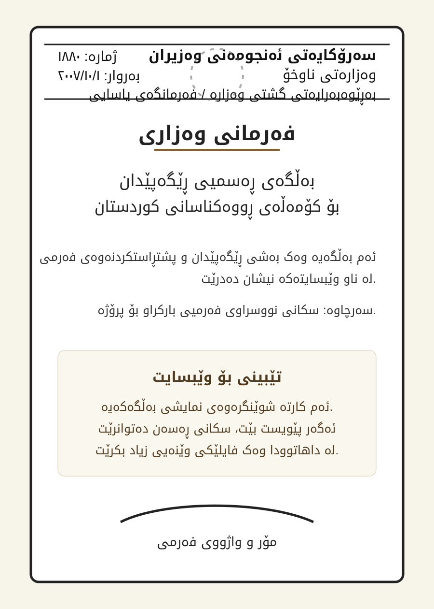

Loading bylaws...
Official Website
Kurdistan Herbalists Association
الجمعية العشابية الكوردستانية
کۆمەڵەى ڕووەکناسانى کوردستان
Approved by the first congress of the association, held on 15 March 2014 in Sulaymaniyah.
Bylaws and Program
Principles and direction of the association
This section is based on the official bylaws and forms the foundation for the website sections.
Activities
Official place for reports and association news
Each activity can later include photos, date, location, participants and a short report.
Activity types
Research
A dedicated section for scientific work and studies
This section is prepared for summaries, field work, partnerships and projects related to plants and public knowledge.
Research entry fields
Essential Information
Knowledge base, membership and records
Official Documents
Logo and permission document
This section uses the official uploaded files in the official assets folder.

Internal Bylaws
Full bylaws text
The text is loaded according to the selected language.